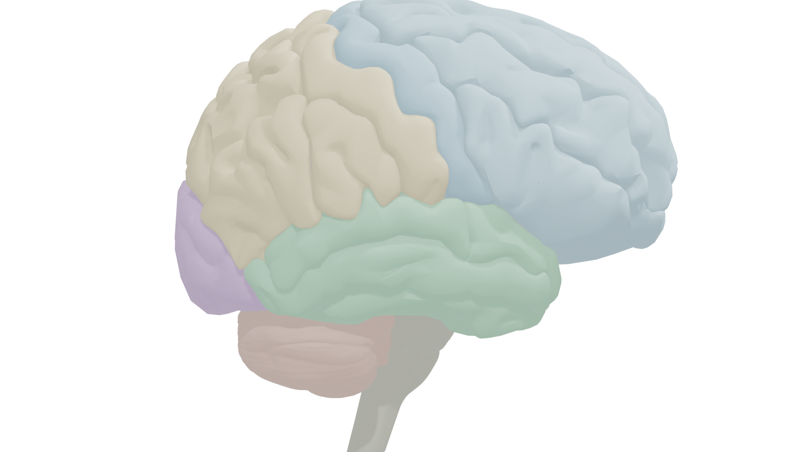
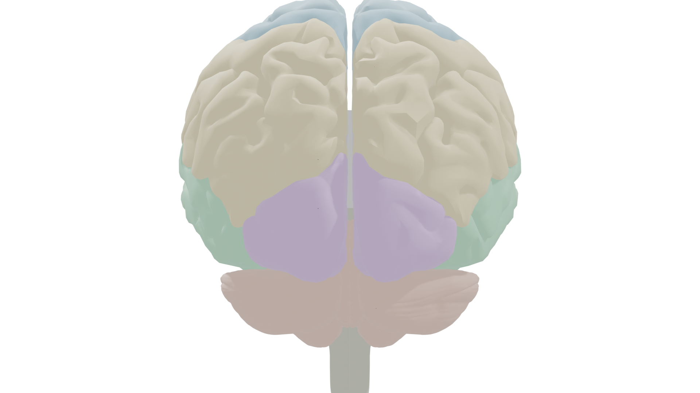
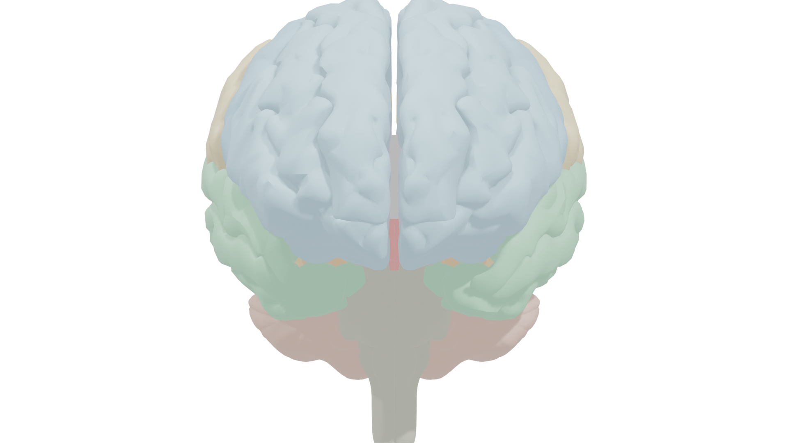
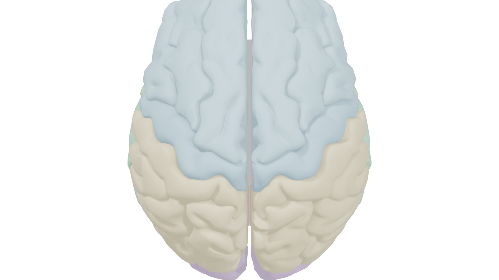
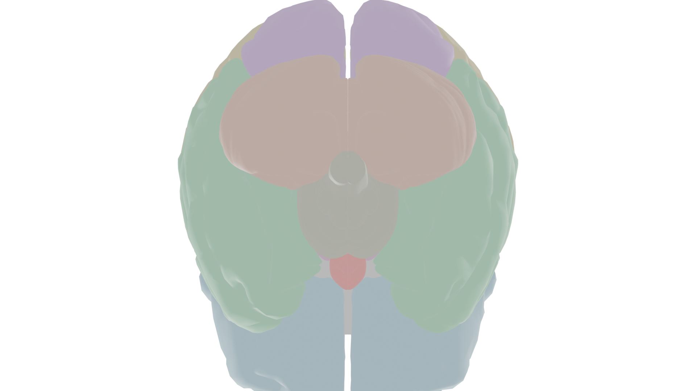
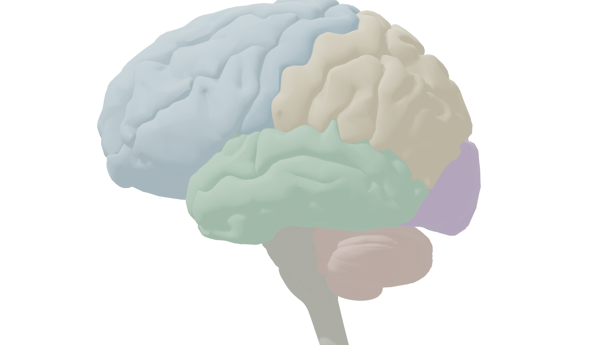

Anatomical Views
← HomeSeven standard anatomical perspectives, rendered from the Blender scene. Structures are color-coded by region. All renders use transparent backgrounds at 1920×1080.
Color Key
Frontal
Parietal
Temporal
Occipital
Cerebellum
Brainstem
Thalamus
Hypothalamus
Hippocampus
Amygdala
Corpus Callosum
Insula
Cingulate

Left Lateral
View from the left side. Shows frontal, parietal, temporal, and occipital lobes, plus the cerebellum. The central sulcus separates the precentral (motor) and postcentral (sensory) gyri.

Right Lateral
Mirror of the left lateral view. The same four lobes and cerebellum are visible. Functional lateralization means some areas differ in role between hemispheres.

Anterior (Front)
Looking at the face of the brain. The frontal lobes dominate this view, with the temporal lobes visible below. The longitudinal fissure divides the two hemispheres.

Posterior (Back)
Looking at the back of the brain. The occipital lobes (primary visual cortex) are prominent, with the cerebellum sitting below.

Dorsal (Top)
Looking down at the top of the brain. The longitudinal fissure runs anterior-to-posterior. Frontal lobes are at the top of this image, occipital at the bottom.

Ventral (Bottom)
The underside of the brain. Shows the temporal lobes, brainstem structures, and cerebellum. The parahippocampal and fusiform gyri are visible on the temporal lobe surface.

Midsagittal
A cut through the midline of the brain, exposing medial structures. The corpus callosum (gray) connects the two hemispheres. The cingulate gyrus (lavender) arches above it. Below, the thalamus, hypothalamus, and brainstem (pons, midbrain, medulla) are visible. The cerebellum sits at the posterior base.